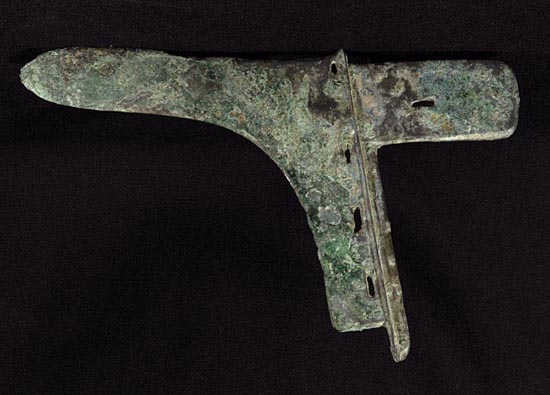
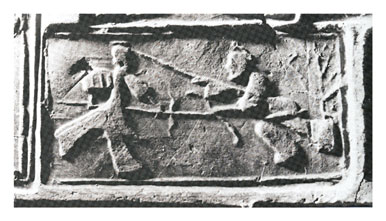
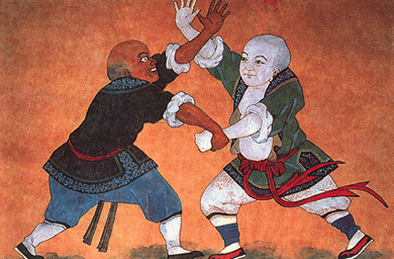
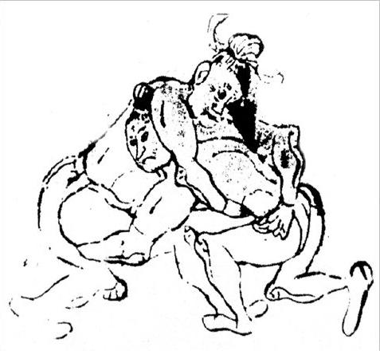

WHAT IS WUSHU?
Wushu, which is also referred to as kung-fu, is the collective term for the martial art practices which originated and developed in China, and wushu is the well-spring of all Asian martial practices. Over its long history, wushu has developed into numerous distinct styles and systems, each incorporating their own techniques, tactics, principles and methods, as well as the use of a wide variety of traditional weaponry. The differing styles that have emerged focus on many aspects of combat, but more importantly they have absorbed the popular philosophies and moral practices of the people in China over the past 5000 years of development. With that, wushu has developed into more than just a simple system of attack and defense and has become a way to cultivate the body, mind and spirit in a positive way that is beneficial to all that practice it.
The character "Wu" in wushu is composed of two Chinese characters, namely "Zhi" which means "to stop" and "Ge" which is an ancient weapon of war. With that the essence of the character Wu is indeed to stop conflict and promote peace. The practice of wushu not only develops a strong and healthy body, but also a strong mind with high moral values, as its practice focuses on "Wu De" or martial ethics.
Today wushu has developed into various forms of practice, each with its own focus and goals. Some practices highlight health and well-being as their primary goal, while others stress maintaining the traditional culture and skills from which the arts originated. More recently, wushu has developed into a global competitive sport, which is practiced and enjoyed by thousands of people worldwide due to its unique and exciting content. Sport wushu is categorized into two main categories, namely Taolu (Routines Competition) and Sanda (Free-Fighting Competition).
A BRIEF HISTORY OF WUSHU
Wushu’s earliest origins may be traced back to primitive man and his struggle for survival in a harsh environment. This would include defending himself from wild animals, hunting activities and of course defense against other human beings. In order to accomplish this, early man created tools for production as well as weapons for combat. It is the application of such weapons that formed the roots of the fighting techniques in wushu’s weaponry in later times.
 Archeological discoveries dating from the Mesolithic, Neolithic ages, to the early Bronze Age include a variety of specific hunting and fighting tools such as arrow heads, sickles, daggers and axes created from stone and later from bronze. During these times, inter-tribal warfare was common in which such weapons were employed, and it is this in essence that promoted the early development of wushu.
During these ancient times we also see the emergence of the ritual contests of strength such as Jiao Di and Chi You play, which consisted of wrestling as well as contestants donning a horned helmet and butting one another. Jiao Di formed the basis for the development of modern Chinese wrestling in later times and was referred to as Xiang Pu and Zheng Jiao.
 Through the Shang Dynasty (approx.1556 BC to 1046 BC), Western Zhou period (1046 BC to 771 BC), Spring and Autumn Period (771 BC to 476 BC) and the Warring States period (481 BC to 221 BC) we see wushu further evolve into specialized armed and unarmed combat methods as well as the emergence of sophisticated weapons for warfare. During these times, wushu was not only practiced by troops, but was also popular and practiced by the common people as a means of self-defense, health improvement as well as entertainment. During the Spring and Autumn Period, Confucius stated that people should be trained in both literary arts as well as martial arts (Wen Wu). We see the gradual development of specific systems starting to emerge.
The Qin Dynasty (221 BC to 206 BC) saw the first unification of China and the establishment of a centralized empire, yet following this conflict still occurred through the Han Dynasty (206 BC to 220 AD) and then the Tang Dynasty (618 AD to 907 AD). During these periods warfare escalated as did the need for differing weapons and fighting methods, all of which led to the further development of wushu. Due to the unification of the nation, wushu’s health and entertainment value was also further explored and developed. Martial performances became popular, as did combat competitions utilizing protective gear. The combats sports of Shou Bo and wrestling became popular within the imperial court and contests were staged with sideline judges. This spread to the common people and became popular amongst them as well.
In 495 A.D the Shaolin Temple was erected on the Song Shan Mountain for the monk Ba Tuo, whose students enjoyed practicing wushu type exercises in their spare time. Later generations of monks combined Chan (Zen) and Quan (martial arts) into what is famous today as Shaolin Quan (Shaolin Wushu).
 From 960 A.D to 1644 A.D gunpowder started to be implemented and soldiers began using simple firearms. While hot weapons slowly came to be employed, cold weapons were still used primarily in combat. With the further development of military drills and training formations, systemized methods of martial training were developed and standardized. Military examinations were implemented for all those wanting to become soldiers.
Folk wushu saw its greatest blossoming and development in a multi-functional way in this era. These wushu practices entered maturity, with a great variety of bare-handed practices emerging. Martial practices were divided into 3 main categories, namely: Gong Fa (skill practice and development); Taolu (routine practice) and Ge Dou (combat practice).
During the Ming Dynasty (1368 AD – 1644 AD) we find the greatest development of systemized styles of wushu, and with that the emergence of written chronicles and manuals on wushu styles and practices. Most famously the Ming General, Qi Jiguang, famous for his defense against invading pirates, compiled the book “Record of Military Training” in which he chronicles folk wushu practices of the time. Many others came to publish training books and manuals on various martial arts practices.
From the beginning of the Qing Dynasty (1644 AD -1911 AD), the use of firearms gradually increased among soldiers and cold weapons were not utilized as much. Instead, wushu was now mainly practiced within common people. With this, martial techniques and practices started to be combined with popular theoretical and philosophical ideas popular amongst the common folk. Traditional medical theory was combined with wushu, which further improved its function for preserving and promoting good health. Popular philosophies such as Taoism were also combined systematically with wushu practice, and we can see the emergence of the popular styles of Xingyi Quan, Bagua Zhang and Taiji Quan from this combination. While they were primarily rooted in martial applications, these styles also paid attention to health and philosophical principles.
 In the early 20th century the Shanghai Jing Wu Physical Culture Society, the Beijing Physical Culture Research Institute and similar organizations were established, and during this time wushu was included in school sports programs, as well as in national sports competitions. This development further pushed wushu into the realm of poplar sport. Public performances became common, as was public practice, and wushu competitions were organized; all of these further spread and promoted wushu’s practice.
In 1923 the Chinese National Wushu Games were held in Shanghai. In 1928, the Nanjing Guoshu Guan was established and wushu’s name was officially changed to Guoshu (national art), with the aim of systemizing wushu practice and to promote and develop it nationwide. They organized numerous wushu meets and competitions featuring taolu, as well as contests with weaponry and barehanded combat. In 1929 Wushu Taolu was included in China’s 3rdNational Games. In 1936 a Chinese wushu delegation performed a demonstration at the XI Olympic Games held in Berlin.
Wushu continually developed through the Republican Era and after the founding of the People’s Republic of China. Formats as well as detailed rules for wushu competition were compiled and implemented, along with the standardization of teaching methods and materials, which greatly developed the standard of wushu. In 1985, the first International Invitation Wushu Tournament was held in Xi’an, China, and the preparatory committee for the International Wushu Federation was formed. In 1990 the International Wushu Federation was officially founded.